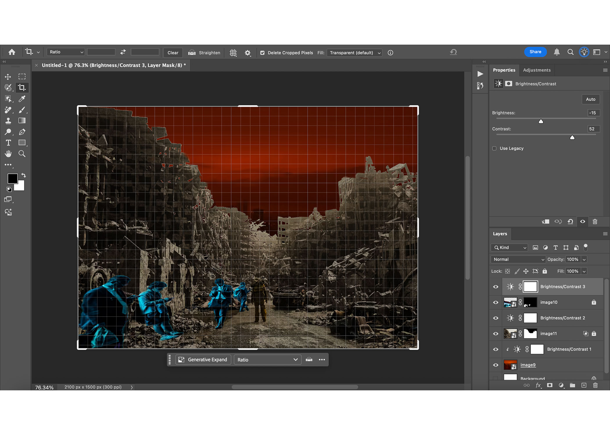
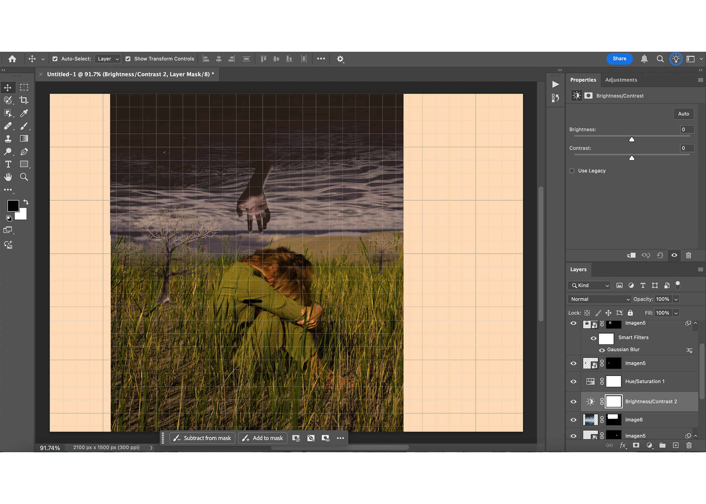

Screenshot:
Screenshot:
In the first collage, I wanted to expose the painful disconnection of humanity. While nature may be in crisis or crumbling around us, the composition shows individuals absorbed into their screens, as if technology has become a veil of indifference. The visual contrast underlines how we have allowed the digital to become more urgent and real than the destruction of our environment.
In the second collage, I wanted to address the tragedy of self-absorption and self-absorption. I wanted to show that even in a sublime landscape or an inescapable reality, humanity tends to sink into its psyche and become concerned with its interior problems. The composition seeks to show that the beauty or drama of the outside world is often ignored since the individual is always trapped and concentrated on their own self.